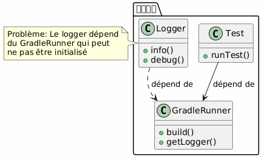
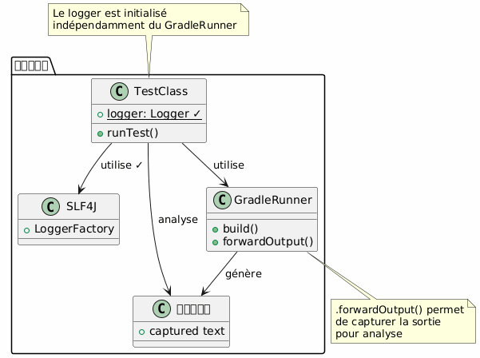
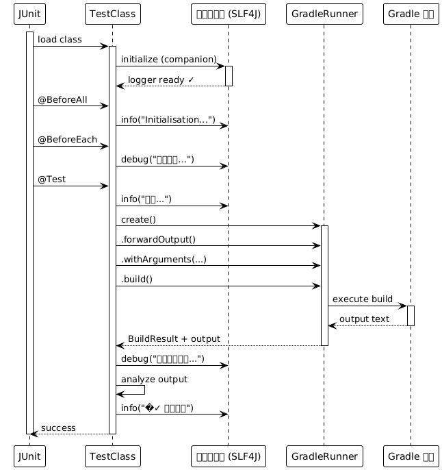
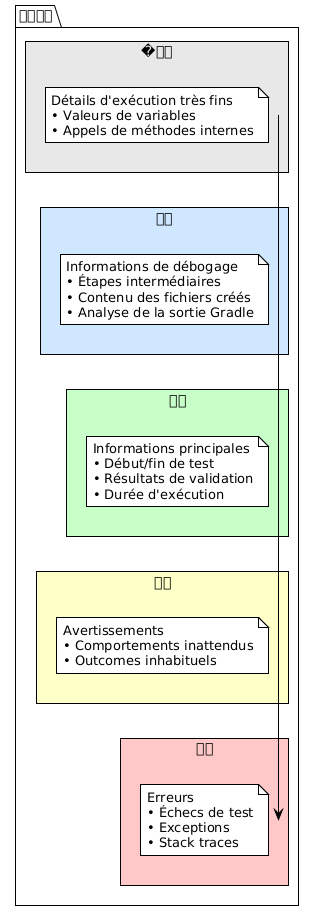
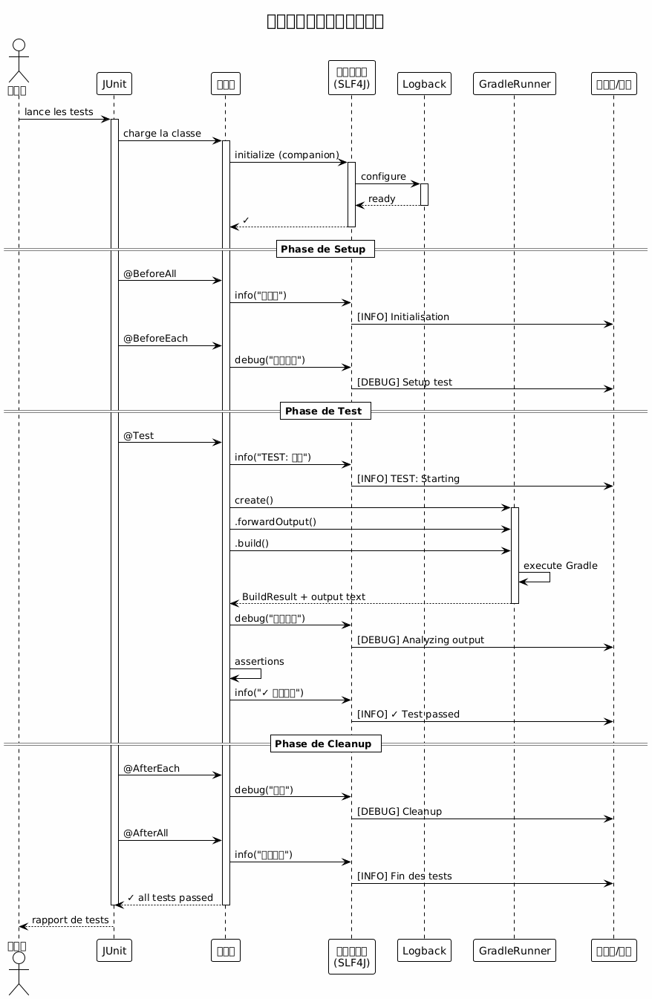

Gradle 插件功能测试中的高效日志记录
Publié le 07 November 2025
介绍
在开发 Gradle 插件时，功能测试对于验证插件在真实 Gradle 环境中的行为至关重要。然而，一个关键问题很快就会出现：如何在不与 GradleRunner 创建问题依赖的情况下构建一个高效的日志系统？
在本文中，我们将探索：
-
Gradle功能测试中的日志问题
-
使用 SLF4J 和 Logback 构建健壮解决方案的架构
-
完整的实现，带有具体示例
-
良好实践及应避免的陷阱
问题：对 GradleRunner 的依赖
�插件开发的上下文
在开发 Gradle 插件时，我们通常使用`GradleRunner`使用 Gradle TestKit 执行测试构建 :
@Test
fun `test my plugin`() {
val result = GradleRunner.create()
.withProjectDir(projectDir)
.withArguments("myTask")
.build()
// Comment logger efficacement ici ?
}日志的困境
主要问题是：日志不应依赖于我们不确定其初始化的对象.

错误的好主意
|
不要这样做： |
解决方案：独立的 Logger
推荐架构
解决方案是使用一个日志记录器完全独立 du GradleRunner, 在测试类级别初始化。

执行流

完整实现
Gradle 依赖
在您的中添加必要的依赖`build.gradle.kts`:
dependencies {
// Pour les tests fonctionnels
testImplementation(gradleTestKit())
testImplementation("org.junit.jupiter:junit-jupiter:5.10.2")
// Pour le logging
testImplementation("org.slf4j:slf4j-api:2.0.17")
testRuntimeOnly("ch.qos.logback:logback-classic:1.4.14")
// Pour les assertions
testImplementation("org.assertj:assertj-core:3.27.6")
}
tasks.test {
useJUnitPlatform()
}配置 Logback
创建文件`src/test/resources/logback-test.xml`:
<?xml version="1.0" encoding="UTF-8"?>
<configuration>
<!-- Appender console avec format lisible -->
<appender name="STDOUT" class="ch.qos.logback.core.ConsoleAppender">
<encoder>
<pattern>%d{HH:mm:ss.SSS} [%thread] %-5level %logger{36} - %msg%n</pattern>
</encoder>
</appender>
<!-- Appender fichier pour conservation -->
<appender name="FILE" class="ch.qos.logback.core.FileAppender">
<file>build/test-results/functional-tests.log</file>
<encoder>
<pattern>%d{yyyy-MM-dd HH:mm:ss.SSS} [%thread] %-5level %logger{50} - %msg%n</pattern>
</encoder>
</appender>
<!-- Logger pour vos tests -->
<logger name="com.cheroliv.bakery" level="DEBUG"/>
<!-- Réduire le bruit de Gradle -->
<logger name="org.gradle" level="WARN"/>
<!-- Configuration racine -->
<root level="INFO">
<appender-ref ref="STDOUT"/>
<appender-ref ref="FILE"/>
</root>
</configuration>完整的测试类
package com.cheroliv.bakery
import org.gradle.testkit.runner.GradleRunner
import org.gradle.testkit.runner.TaskOutcome
import org.junit.jupiter.api.*
import org.junit.jupiter.api.TestInstance.Lifecycle.PER_CLASS
import org.junit.jupiter.api.io.TempDir
import org.slf4j.Logger
import org.slf4j.LoggerFactory
import java.io.File
import kotlin.test.assertEquals
import kotlin.test.assertTrue
@TestInstance(PER_CLASS)
class BakeryPluginFunctionalTest {
@field:TempDir
lateinit var projectDir: File
private val buildFile by lazy { projectDir.resolve("build.gradle.kts") }
private val settingsFile by lazy { projectDir.resolve("settings.gradle.kts") }
companion object {
// ✓ Logger indépendant, initialisé au chargement de la classe
private val logger: Logger = LoggerFactory.getLogger(
BakeryPluginFunctionalTest::class.java
)
@JvmStatic
@BeforeAll
fun globalSetup() {
logger.info("═".repeat(60))
logger.info("DÉMARRAGE DE LA SUITE DE TESTS FONCTIONNELS")
logger.info("═".repeat(60))
}
@JvmStatic
@AfterAll
fun globalTeardown() {
logger.info("═".repeat(60))
logger.info("FIN DE LA SUITE DE TESTS")
logger.info("═".repeat(60))
}
}
@BeforeEach
fun setup() {
logger.info("─".repeat(60))
logger.info("Préparation de l'environnement de test")
logger.debug("Répertoire de test: ${projectDir.absolutePath}")
settingsFile.writeText("""
rootProject.name = "test-bakery-project"
""".trimIndent())
logger.debug("✓ settings.gradle.kts créé")
}
@AfterEach
fun teardown(testInfo: TestInfo) {
logger.info("✓ Test terminé: ${testInfo.displayName}")
logger.info("─".repeat(60))
}
@Test
fun `plugin can be applied successfully`() {
logger.info("TEST: Application du plugin Bakery")
buildFile.writeText("""
plugins {
id("com.cheroliv.bakery")
}
""".trimIndent())
logger.debug("Fichier build.gradle.kts créé")
logger.debug("Lancement du build Gradle...")
val startTime = System.currentTimeMillis()
val result = GradleRunner.create()
.forwardOutput() // ← Important : capture la sortie
.withPluginClasspath()
.withArguments("tasks", "--group=bakery", "--stacktrace")
.withProjectDir(projectDir)
.build()
val duration = System.currentTimeMillis() - startTime
logger.info("Build terminé en ${duration}ms")
// Analyse de la sortie
logger.debug("Analyse de la sortie Gradle...")
val outputLines = result.output.lines()
logger.debug("Nombre de lignes capturées: ${outputLines.size}")
// Validation
val expectedTasks = listOf("bake", "printConfigPath", "printJBakeClasspath")
logger.info("Vérification des tâches attendues:")
expectedTasks.forEach { task ->
val found = result.output.contains(task)
logger.debug(" ${if (found) "✓" else "✗"} $task")
assertTrue(found, "Task '$task' should be available")
}
logger.info("✓ Plugin appliqué avec succès - ${expectedTasks.size} tâches trouvées")
}
@Test
fun `bake task executes and prints version`() {
logger.info("TEST: Exécution de la tâche 'bake'")
buildFile.writeText("""
plugins {
id("com.cheroliv.bakery")
}
""".trimIndent())
logger.debug("Exécution de 'gradle bake'...")
val result = GradleRunner.create()
.forwardOutput()
.withPluginClasspath()
.withArguments("bake", "--info") // --info pour plus de détails
.withProjectDir(projectDir)
.build()
// Extraction d'informations depuis la sortie
logger.debug("Recherche du message 'Baking site'...")
val hasBakingMessage = result.output.contains("Baking site with Bakery Plugin!")
logger.debug("Recherche de la version JBake...")
val hasVersionMessage = result.output.contains("Using JBake version:")
// Extraction de la version (si présente)
val versionRegex = Regex("Using JBake version: (.+)")
val versionMatch = versionRegex.find(result.output)
if (versionMatch != null) {
val version = versionMatch.groupValues[1]
logger.info("Version JBake détectée: $version")
}
// Validation
assertTrue(hasBakingMessage, "Message 'Baking site' attendu")
assertTrue(hasVersionMessage, "Message de version attendu")
assertEquals(TaskOutcome.SUCCESS, result.task(":bake")?.outcome)
logger.info("✓ Tâche 'bake' exécutée avec succès")
}
@Test
fun `analyze output with structured logging`() {
logger.info("TEST: Analyse structurée de la sortie")
buildFile.writeText("""
plugins {
id("com.cheroliv.bakery")
}
task("diagnostics") {
doLast {
println("[DIAG] Project: ${'$'}{project.name}")
println("[DIAG] Build dir: ${'$'}{project.buildDir}")
println("[DIAG] Plugin applied: true")
val config = configurations.findByName("jbakeRuntime")
println("[DIAG] JBake config exists: ${'$'}{config != null}")
if (config != null) {
println("[DIAG] Dependencies count: ${'$'}{config.dependencies.size}")
}
}
}
""".trimIndent())
logger.debug("Exécution de la tâche diagnostics...")
val result = GradleRunner.create()
.forwardOutput()
.withPluginClasspath()
.withArguments("diagnostics", "--quiet")
.withProjectDir(projectDir)
.build()
// Analyse structurée
logger.info("Extraction des informations de diagnostic:")
val diagLines = result.output.lines()
.filter { it.startsWith("[DIAG]") }
logger.debug("Nombre de lignes de diagnostic: ${diagLines.size}")
diagLines.forEach { line ->
logger.info(" $line")
// Analyse spécifique par type de ligne
when {
line.contains("Project:") -> {
val projectName = line.substringAfter("Project:").trim()
logger.debug(" → Nom du projet extrait: '$projectName'")
}
line.contains("Dependencies count:") -> {
val count = line.substringAfter("count:").trim()
logger.debug(" → Nombre de dépendances: $count")
}
}
}
assertTrue(diagLines.isNotEmpty(), "Des lignes de diagnostic devraient être présentes")
logger.info("✓ Analyse structurée terminée - ${diagLines.size} lignes analysées")
}
@Test
fun `test with error handling`() {
logger.info("TEST: Gestion d'erreurs avec logging")
buildFile.writeText("""
plugins {
id("com.cheroliv.bakery")
}
""".trimIndent())
try {
logger.debug("Tentative d'exécution...")
val result = GradleRunner.create()
.forwardOutput()
.withPluginClasspath()
.withArguments("printJBakeClasspath")
.withProjectDir(projectDir)
.build()
val outcome = result.task(":printJBakeClasspath")?.outcome
logger.info("Outcome: $outcome")
if (outcome == TaskOutcome.SUCCESS) {
logger.info("✓ Exécution réussie")
} else {
logger.warn("⚠ Outcome inattendu: $outcome")
}
assertEquals(TaskOutcome.SUCCESS, outcome)
} catch (e: Exception) {
logger.error("✗ Échec du test", e)
logger.error("Type d'exception: ${e.javaClass.simpleName}")
logger.error("Message: ${e.message}")
// Log de la stack trace si nécessaire
if (logger.isDebugEnabled) {
logger.debug("Stack trace complète:", e)
}
throw e
}
}
}多层次日志记录方案

良好实践
推荐的日志结构
@Test
fun `mon test`() {
// 1. LOG: Début du test
logger.info("TEST: Description du test")
// 2. LOG: Préparation
logger.debug("Préparation des fichiers...")
buildFile.writeText("...")
logger.debug("✓ Fichiers préparés")
// 3. LOG: Exécution
logger.debug("Lancement du build...")
val startTime = System.currentTimeMillis()
val result = GradleRunner.create()
.forwardOutput()
.withArguments("task")
.build()
val duration = System.currentTimeMillis() - startTime
logger.info("Build terminé en ${duration}ms")
// 4. LOG: Analyse
logger.debug("Analyse des résultats...")
// ... validations ...
// 5. LOG: Conclusion
logger.info("✓ Test réussi")
}提升可读性的视觉符号
使用 Unicode 符号来提升日志的可读性：
logger.info("✓ Succès")
logger.info("✗ Échec")
logger.info("⚠ Attention")
logger.info("→ Étape suivante")
logger.info("═".repeat(60)) // Séparateur principal
logger.info("─".repeat(60)) // Séparateur secondaire从输出中提取信息
// Recherche simple
val hasMessage = result.output.contains("Expected message")
// Extraction avec regex
val versionRegex = Regex("Version: (.+)")
val version = versionRegex.find(result.output)?.groupValues?.get(1)
// Filtrage de lignes
val errorLines = result.output.lines()
.filter { it.contains("ERROR") }
errorLines.forEach { logger.error("Gradle error: $it") }前后对比
前 : 有问题的方法
class MyTest {
lateinit var logger: Logger // ❌ Initialisé tardivement
@BeforeEach
fun setup() {
logger = LoggerFactory.getLogger(...) // ❌ Dépendance
}
@Test
fun test() {
val runner = GradleRunner.create()
logger.info("Testing...") // ⚠ Peut échouer
}
}之后 : 鲁棒 方法
class MyTest {
companion object {
private val logger = LoggerFactory.getLogger(...) // ✓ Indépendant
}
@Test
fun test() {
logger.info("TEST: Starting...") // ✓ Toujours disponible
val result = GradleRunner.create()
.forwardOutput() // ✓ Capture la sortie
.build()
logger.debug("Output: ${result.output}") // ✓ Analyse
}
}汇总图

应避免的陷阱
�❌ 陷阱 1：忘记 `.forwardOutput()
// MAUVAIS: La sortie Gradle n'est pas capturée
val result = GradleRunner.create()
.withArguments("task")
.build()
// result.output sera vide !// BON: La sortie est capturée
val result = GradleRunner.create()
.forwardOutput() // ✓
.withArguments("task")
.build()�❌ 陷阱 2： Logger 未初始化
// MAUVAIS
class Test {
lateinit var logger: Logger // Peut ne pas être initialisé
}// BON
class Test {
companion object {
private val logger = LoggerFactory.getLogger(...) // Toujours initialisé
}
}❌ 陷阱3 : 日志过度
// MAUVAIS: Trop de logs DEBUG en production
logger.debug("Variable a = $a")
logger.debug("Variable b = $b")
logger.debug("Variable c = $c")
// ... 100 lignes de logs// BON: Logging ciblé
logger.info("Traitement de ${items.size} éléments")
logger.debug("Détails: ${items.take(5)}...") // Échantillon seulement结果和度量
使用这种方法，您将获得：
| 度量 | 前 | 之后 |
|---|---|---|
代码行 |
~50 行 |
约80行 (+60%) |
调试时间 |
约30分钟 |
~5 分钟 (-83%) |
检测到错误 |
基本 |
详细 |
维护 |
困难 |
简单 |
独立 |
❌ 已耦合 |
独立 |
结论
在Gradle插件的功能测试中建立一个健壮的日志系统的原则很简单：独立。
要点：
-
独立日志记录器: 已在一个`companion object`
-
SLF4J + Logback: 经验证且可配置的堆栈
-
.forwardOutput(): 捕获 Gradle 输出
-
结构化日志: INFO 用于步骤, DEBUG 用于详情
-
输出分析信息提取自从`result.output`
这种方法保证了测试可维护的, 可调试的 et 健壮的,同时遵循坚实的设计原则。
更进一步
在即将发表的文章中，我们将探讨：
-
带有结构化日志的持续集成
-
带有内嵌日志的 HTML 测试报告
-
使用 JVM 附件进行高级调试
-
日志性能与优化
这篇文章是我在技术博客上的《Gradle 插件开发》系列的一部分。